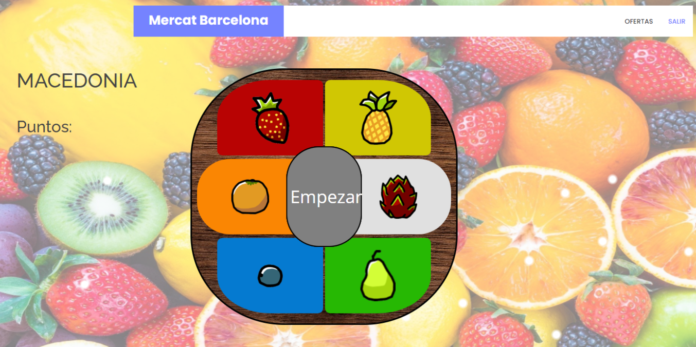
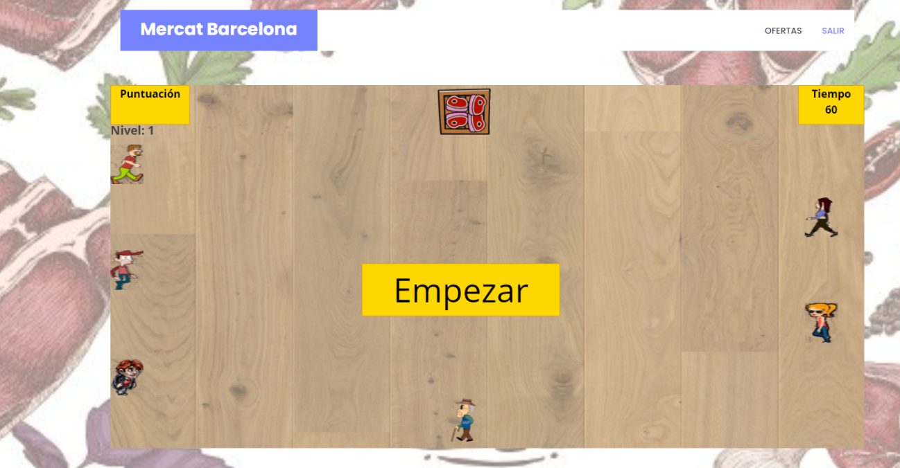
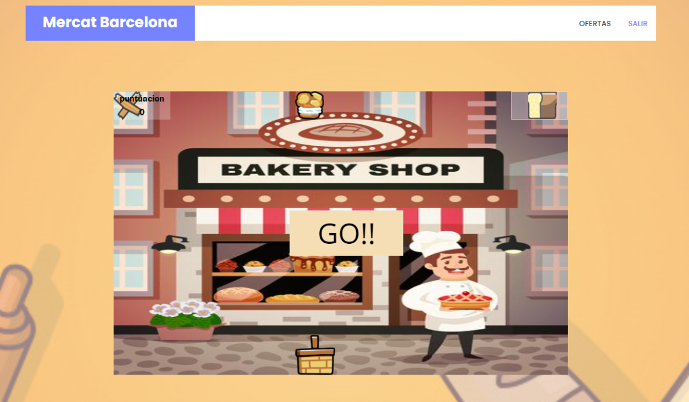
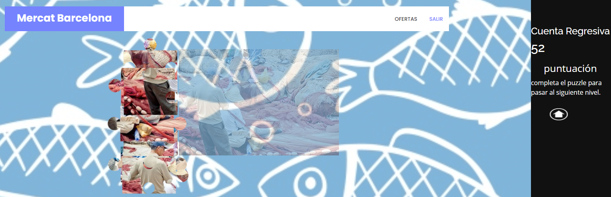

Color
Hemos elegido los colores #7583ff (azul), #00cc95 (verde azulado), #001bff (azul fuerte), para crear una sensación de uniformidad y solidez en la pagina web. Ayuda al usuario a que no se canse rapidamente sin usar colores que puedan ser molestos a la vista
Tipografia
Hemos elegido la tipologÍa de opens sans ,que es una tipologia de google , es elegante y a la vez casual
Open Sans es de líneas limpias y formas neutrales y fue creada especialmente para el catalogo de tipos de letra de Google por lo que el diseñador se esforzó en ofrecer una tipografía que se adapta y se lee bien en todos los dispositivos así como en el papel.
Fotos Juegos

Este juego consiste en repetir la secuencia de las frutas para crear la macedonia correcta.

Este juego consiste en llegar a la caja con carne que hay al final del contenedor y por el camino hay gente de la cual son obstaculos que el jugador debera evitar chocar, si eso se produce el jugador se le devolvera a la posicion inicial dependiendo de donde se encuentre la caja

El juego consiste en recoger los alimentos en la cesta y el jugador dispone de un minuto para conseguir la mayor cantidad de puntos .
